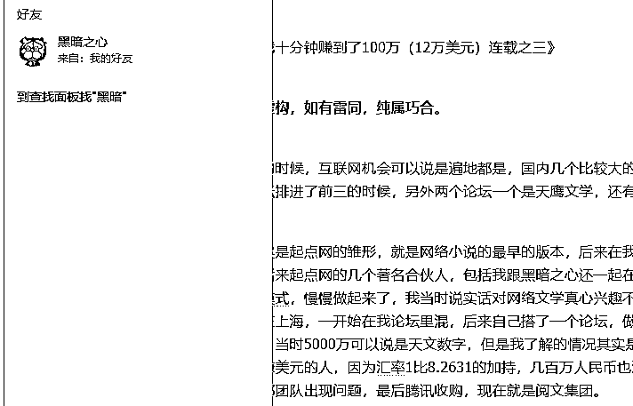

来源：https://tj51bxige8.feishu.cn/docx/UVYLdjUyuo60vQx69SecPd7ZnTg
大家好，我是静水流深，英文工具站的教练组成员。
我在杭州线下会我答应过亦仁 ，以后多提供优质出海内容，让生财有术越办越好。
我之前的分享：《分享3个单人就能做的海外赚钱案例》
后来我又拿出了一个新的项目，也是可以一个人单干而且一定可以月入万刀的：
https://tj51bxige8.feishu.cn/docx/M0hMdjWj3o8WtNxZdv4cLnfenIh
然后依然一些人存在疑问，今天我在这里用正在跑的一个项目，分享给大家，当然这个项目我一年前也在我的星球丝绸之路几次提示过会员是可以做的，只是没人玩得有我这么大。
前段时间chatGPT火的时候，我分享了一篇文章独发在生财有术，结果还是过于敏感，被星球官方删除：
https://tj51bxige8.feishu.cn/docx/TSZBdBfynoBINux2htWcefrtnHc
上个月分享了《通过Wise的推荐项目，每天躺赚一万英镑+》也受到了一致好评，今天在这里再一次感谢大家的点赞与支持。
最近几天高考，亦仁抛出了一个话题，考上985与年入100万哪个更难？
于是有了这篇文章的开头《考上985与年入100万哪个更难？这期航海挖的坑今天开始填》
因为写这个独发生财的连载起因是航海的时候答应过各位船友的，只是上次一次契机，所以这一次我把标题换了，以后以这个来连载，当然也会点题，讲述这二十多年来，互联网圈特别是国外互联网圈经历的一些事以及一些机会，希望分享能够给大家带来有价值的体验。
未阅读前面的朋友可以看
《那一年，我十分钟赚到了100万（12万美元）连载之二》
《那一年，我十分钟赚到了100万（12万美元）连载之三》
此连载纯属虚构，如有雷同，纯属巧合。
在本世纪初的时候，互联网机会可以说是遍地都是，国内几个比较大的海外淘金的论坛也不胜枚举。之前西陆我的第九城市论坛排进了前三的时候，另外两个论坛一个是天鹰文学，还有一个是广告商信誉点评。
天鹰文学其实是起点网的雏形，就是网络小说的最早的版本，后来在我的第九城市论坛里面，也走过出江南武士，黑暗之心等后来起点网的几个著名合伙人，包括我跟黑暗之心还一起在深圳游玩过欢乐谷，他们当时就是找到了一个好的商业模式，慢慢做起来了，我当时说实话对网络文学真心兴趣不大，他们当时还问过我哪里的服务器好，由于那群人都在上海，一开始在我论坛里混，后来自己搭了一个论坛，做起了之后小圈子，再之后就是盛大5000万把他们收购了，当时5000万可以说是天文数字，但是我了解的情况其实是拿到手因为人比较多，没多少钱，因为那个时候我也是赚美元的人，因为汇率1比8.2631的加持，几百万人民币也没多少万美元。后来的事情大家也知道了，他们起点内部团队出现问题，最后腾讯收购，现在就是阅文集团。我唯一有点意外的是，黑暗之心真的就是纯技术最后成为上市公司老板，所以各位一定要明白，很多事情首先你要敢去想，敢去做，你才配有实现梦想的资格。

还有一个论坛就是广告商信誉点评论坛，里面并不是讨论当时国内的广告联盟，因为那个时候国内根本没有广告联盟，都是讨论国外的广告联盟。里面的内容基本上也全是暗语，比如C开头的广告联盟最近支付没有？D这个广告最近大家正常吗？都是这样的话，但是居然这样一个论坛在西陆社区里也排名前三。我也是在这个论坛里面，学到东西，最后成名的。
一开始，我是一个个人网站站长，因为需要放一些banner广告，所以去广告商信誉点评里去了解这些信息。后来发现这个论坛里面，没有任何人分享自己的网站，但是经常有人贴出巨额的寄到中国的支票。（那时候广告费全是美国邮寄支票过来然后拿到中国银行去托收）包括有一次，当时还存活的多来米的网站，搞了一个广告联盟，推出了一个香港的CPC 0.1港币的广告，我当时网站的流量已经非常大了，但是有些人一天的收入居然是我的十倍，我奇怪了很久，居然还有这样的强人。
慢慢地，终于有人一语道破了天机，说这个论坛里的人，网站除了自己访问，没人会访问他们的网站，他们的网站只需要申请到广告Banner代码，放到自己的网站上即可。
估计上面这句话，一般人看不出来任何玄机，但是我顿时明白了，原来这个论坛里面，全是EMUer（EMU不懂什么意思的可以查看我连载前面的文章）。因为当时有个俄罗斯人开发的软件叫CACA，这个软件有什么用呢？就是只需要你把你的广告代码放到这个软件里，同时导入大量的代理服务器地址，他会自动模拟人访问，利用代理服务器模拟N个人访问者，观看并点击你的广告。换句话说，上面的那句话解释就是，你只需要有广告联盟的帐号，有广告代码，不需要有访问量，只需要开CACA这个软件，并且有大量的代理服务器地址，等同于你有一个非常大访问量的网站。
2002年左右，通过上述方法发家致富的人，也就是活跃在广告商信誉点评的一些高手，基本上是互联网刚刚开始的时候，第一批财富自由的人，虽然没有做出任何有价值的企业，但是别人的钱是真实地赚到了。
当我知道CACA这个工具的时候，基本上吃的是他们的残羹剩饭，因为当时第一次互联网泡沫的破灭，纳斯达克趋近于崩盘，各种热钱灰飞烟灭，这个时候互联网广告行业里，CPM，CPC类广告主无法确定广告效果的广告逐渐被广告主冷落，最大的广告公司CJ，Linkshare，以及当时还没被CJ收购的befree基本上找不到什么CPC类的广告主，而CACA这款工具是针对CPC类广告主设计的，第一次这个行业里淘汰人从那一刻就开始，赚到钱的人上岸了，没有赚到钱的人撤退了。
直到有一天，广告商信誉点评这个论坛，有一个高手秀肌肉，说Befree里有个N开头的CPA类的广告，真心金主爸爸，一个月搞了十几万美元，2002年那个时候，一个月十几万美元什么概念？汇率还是1比8以上。
我当时顺着信息去寻找，符合这个人说的广告，最后锁定在Netflix，一个推广注册17美元，但是需要购买会员，这怎么搞？后来有一天，我在某个私密的西陆论坛里，看见两个广告商信誉点评的熟人在那PY交易，其中一个就是需要信用卡生成器软件，我瞬间明白了，原来生成的信用卡卡号可以过Netflix的会员购买注册...
这个漏洞到今天依然存在，国外有很多在线支付的系统，并不会即时核验你的信用卡是否是真的，以及是否够额度，这也是跟信用卡一开始的发展历史有关，信用卡诞生之初，都是拉卡机，复制你的信用卡卡号等信息，之后再去找银行要钱，所以国外的在线支付，很多依然沿用这个规则到现在，虽然很多支付通道现在都是即时核验，但是依然还是有不少在线支付系统有这样的漏洞。这也是为什么还有一些人至今仍然在做国外返利网培训的原因，核心就是我刚刚说的这些。
我有了这个漏洞加持，赚钱就非常简单了，当时我们搞了一个内部小群，就2-3个人，互相测试分享，我用Buy.com这家公司的漏洞，换到了当时最最经典的一个广告主漏洞，就是Dell。Dell有多牛逼呢，基本上生成的卡都可以过，佣金审都不审核就发，有人问，那你们买那么多Dell的电脑，都是假卡Dell不找你们吗？要知道一个企业在货款没有收到的时候，是不会安排机器发出的，只是Dell的公司跟广告部门本身就存在管理不善，那边无非是有效订单还是无效订单都算有效，所以才导致最后这样的漏洞存在。
后面最经典的一幕就出现了，因为广告联盟支付都是次月支付上个月的佣金，所以我们一般每个月最后一天才开始赚钱，那天我刚好一边在网吧里打CS一边赚钱，结果忘记了Dell如果购买服务器是4%的佣金，而不是电脑的1%，结果一把下来，佣金12万多美元，整个过程耗时就是平时大家网上购物买东西耗时一样。后来Befree还发邮件问我为什么业绩这么好，我就回了一句我流量可能比较大吧，因为我流量全是用CACA制造出来的，再后来就是一张12万多美元的支票寄到了武汉，当时确实还是比较紧张，不是紧张怕什么事情，而是紧张支票在邮寄的过程中丢失。
因为这些内幕都无法在公开的论坛里讨论，外加本身第一次互联网泡沫经济的破灭，广告商信誉点评这个论坛就慢慢萧条，外加后来Discuz的崛起，于是我建立了大家都知道的论坛，中国站长与广告论坛。